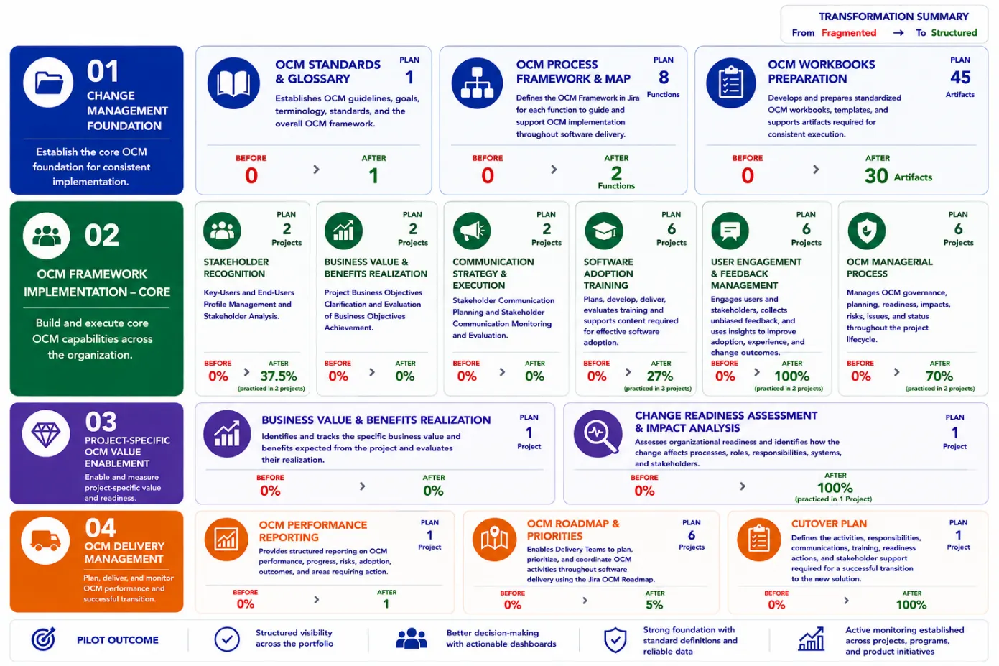
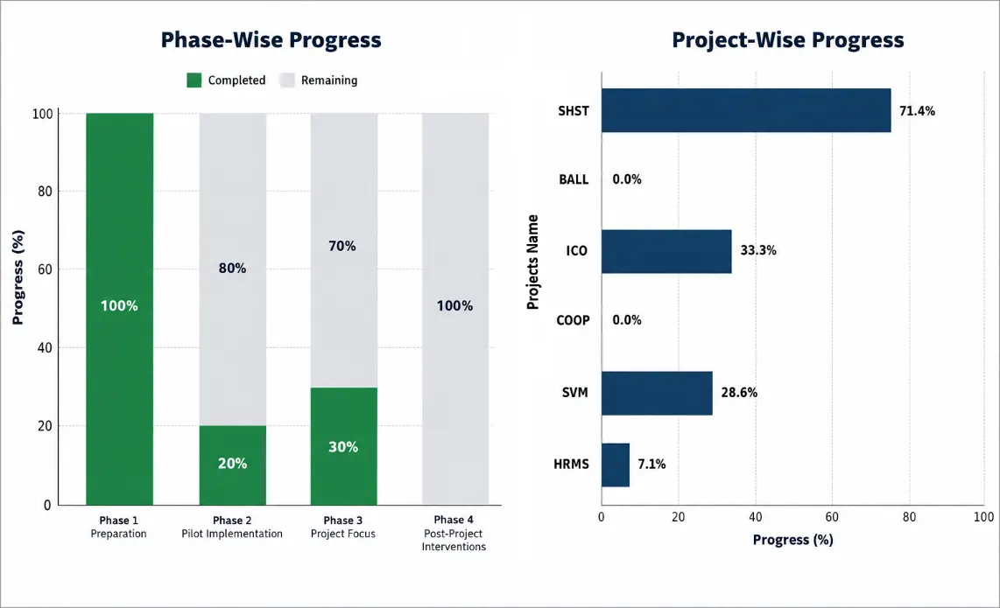
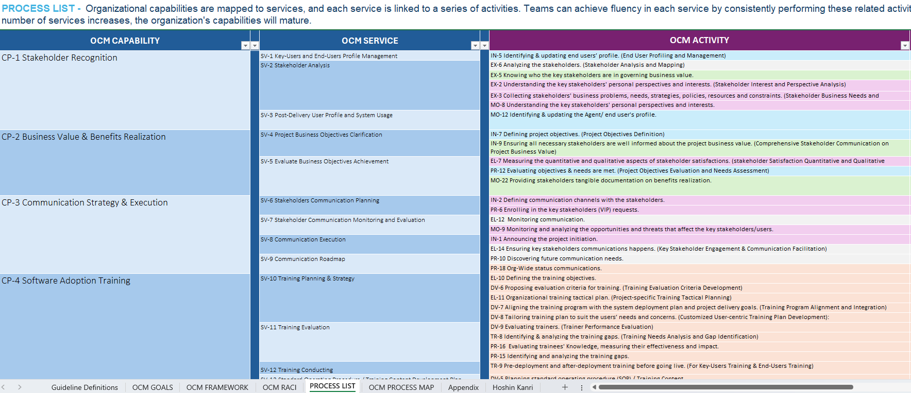
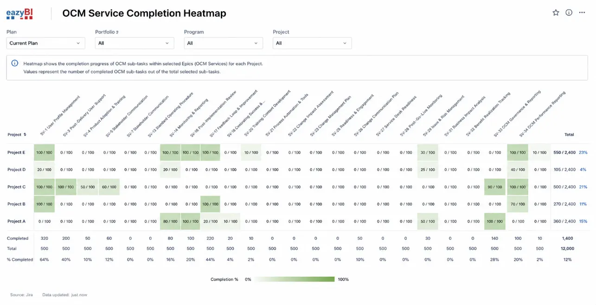
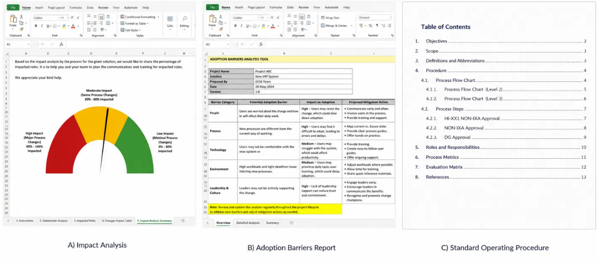
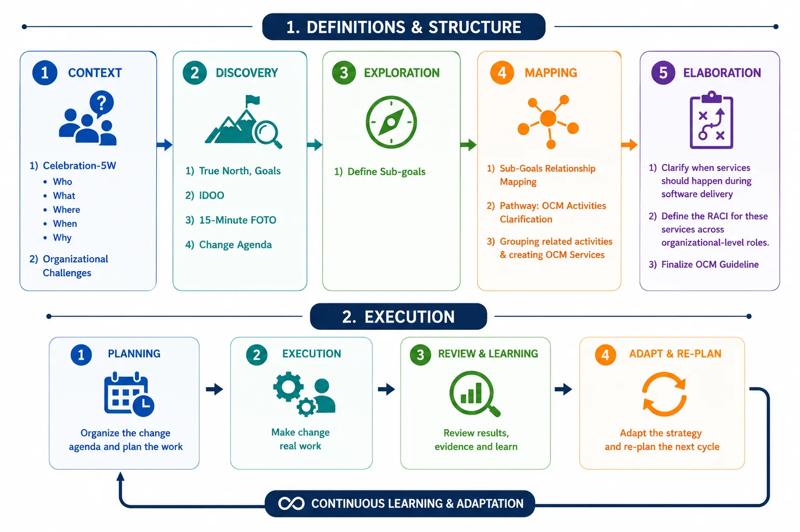
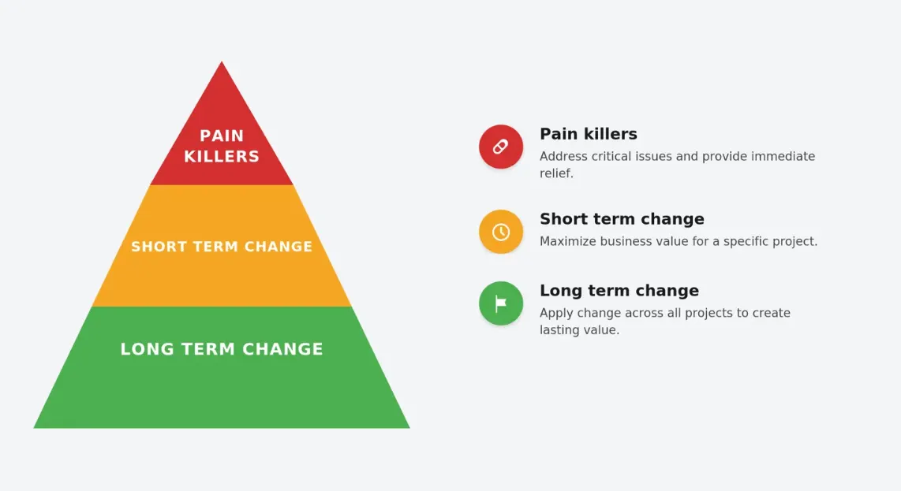
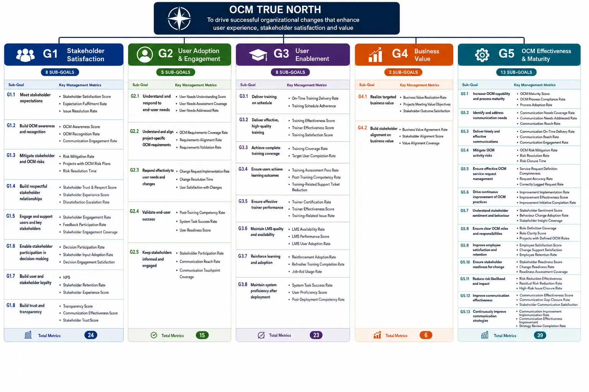
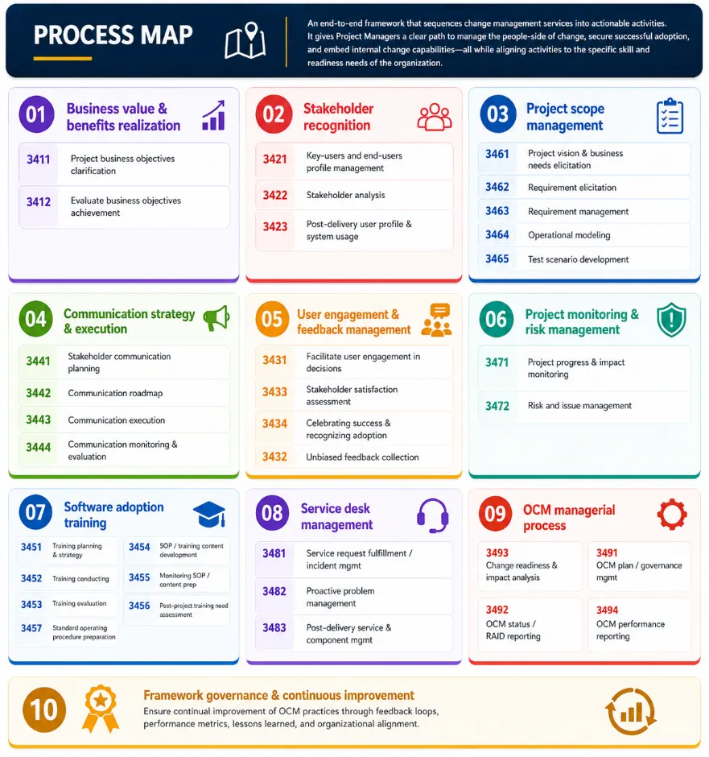

Turning organizational change into successful adoption, sustainable outcomes, and measurable business value across IT and the business.
Organizational Change Management (OCM) provides a structured approach to embedding change across software delivery. It aligns people, processes, and technology by assessing readiness, managing adoption, and addressing impacts on users and stakeholders. OCM provides leaders with visibility into change progress and adoption risks, enabling timely action and helping ensure that solutions are adopted effectively and deliver the intended business value.

OCM was established as a new PPM Service, with no formal change management capability in place prior to this initiative. During the reporting period, the function progressed from zero formal standardization to an emerging operational service, supported by a common glossary, governance artifacts, aligned processes, and a Jira-based environment. The initiative achieved ~33% overall progress, with user profiling and training capabilities already operational, while stakeholder analysis, business value, communication, and user feedback remain in development.
The service has expanded to cover change readiness, resistance management, sponsorship, change impact, cultural alignment, reinforcement, post-go-live engagement, behavioral adoption, and OCM success metrics across the project lifecycle. The focus is now shifting from establishing the foundation to embedding OCM into project delivery and measuring adoption and business value.
At a high level, the pilot effort is distributed across the following key workstreams:
The image below provides a consolidated view of OCM progress over the four-month reporting period. The Phase-Wise Progress chart on the left illustrates completed and remaining activities across the four operationalization phases, with green representing completed work and gray indicating activities still in progress. The Service Progress charts on the right show the implementation status of individual OCM services across two projects, highlighting variations in progress and areas requiring further attention.

Below are examples of tools taken directly from the live Jira environment, along with the dashboards developed to support portfolio management and reporting.
The OCM-Framework defines an integrated operating framework for Organizational Change Management (OCM) across the software delivery lifecycle. It translates OCM strategic objectives into capabilities, services, and lifecycle-specific activities, from exploration and initiation through post-production and continuous improvement. The framework provides end-to-end traceability between OCM goals, capabilities, services, lifecycle milestones, activities, expected outcomes, and supporting artifacts. It also clarifies dependencies, governance and performance monitoring, stakeholder engagement, adoption, feedback, and operational support. By bringing these elements together within a single lifecycle-based model, the framework provides a consistent, scalable, and traceable approach to planning, executing, monitoring, and continuously improving OCM throughout software delivery.

This Jira-based roadmap enables project and product managers to plan and prioritize OCM activities across the software delivery lifecycle. It provides a long-term view of required activities, which can be refined and incorporated into each sprint for focused execution and tracking. The roadmap is regularly reviewed and adapted to reflect changing project needs, priorities, and progress.
The OCM Service Completion Heatmap visualizes OCM service coverage across projects, with projects and OCM services shown as the two dimensions of the heatmap. It highlights which services are used and their completion status within each project, making it easy to identify coverage gaps, unused services, and patterns that can support decisions on whether services are needed, should be adopted, or can be deprioritized.

The three standardized charter templates provide a consistent framework for defining and governing initiatives while addressing scope, ownership, approval, and stakeholder alignment. They give teams a clear and repeatable way to communicate the delivery plan and key considerations that matter to stakeholders and customers, creating a shared understanding of what is expected and how the initiative will be delivered.

This approach establishes OCM within the organization by moving from understanding change to designing and delivering targeted interventions, then learning from the results. It begins by clarifying the context, objectives, and key challenges, then identifies the areas requiring change and how they relate. These insights are translated into practical OCM services with clear responsibilities and guidance on who should apply them, when, and how. The framework is executed through a simple plan, deliver, review, and adapt cycle, enabling it to evolve with evidence, experience, and changing organizational needs.

Organizational Change Management (OCM) constitutes the organization's structured approach to transitioning from the current state to a defined future state and facilitating the effective adoption of change across people, processes, services, and operations to achieve sustainable business value.
This approach integrates strategy, services, projects, people, and operations, thereby ensuring that delivery teams apply change management practices as an ongoing process of value realization. It establishes a consistent method for understanding, planning, implementing, adopting, and sustaining change, informed by what must change, the rationale for the change, the affected stakeholders, and the anticipated outcomes and value.
As illustrated below, the Organizational Change model comprises three horizons — Pain Killer Change, Short-Term Change, and Long-Term Change — each representing a distinct level of urgency, scope, and value realization.

The OCM Goals & Objectives framework translates the Change Management practice's strategic direction into measurable outcomes. True North defines OCM's overarching purpose and long-term impact, which are expressed through broad, achievable Goals [G #]. Each Goal is then divided into specific, measurable Subgoals [G #. #] that defines the outcomes needed for success. Management Metrics track progress against these objectives, helping the organization assess performance, identify gaps, and determine whether the intended change outcomes have been achieved. Together, these elements connect OCM's purpose and strategy to clear objectives, expected outcomes, and measurable results.

The OCM Process Map illustrates how OCM Capabilities and their related Services are applied throughout the software delivery lifecycle. A Capability represents the essential skills and competencies required to achieve OCM objectives and sustain effective change, while a Service represents a structured set of collections of activities that operationalizes a capability and addresses specific Change Management needs during software delivery. The map shows the sequence of services across the delivery lifecycle, demonstrating how services enable and strengthen OCM capabilities to support effective change planning, execution, adoption, and sustainability.

The OCM Strategic Roadmap maps change-management activities across the full lifecycle — from Exploration through Transition, then into the recurring Production & Movement operating loop — against the four OCM goals (Stakeholder Satisfaction, User Adoption, Users Enablement, and Business Value Realization).
The OCM framework is designed to establish a consistent approach to Organizational Change Management within IT, enabling teams to identify change needs early, apply targeted OCM interventions, and maximize adoption and business value.
The OCM pilot follows an iterative approach to embed change management into software delivery: define guidelines, plan and implement, monitor and reinforce, and sustain and improve.
Define practical OCM practices that delivery teams can select and adapt to address their change needs.
Assess project needs, define the OCM approach and responsibilities, engage key stakeholders and OCM Champions, and implement relevant OCM activities throughout the project lifecycle.
Track adoption, risks, and outcomes, review progress, and address gaps to strengthen adoption.
Capture lessons learned, support sustained adoption, and use insights to refine OCM practices and guidelines across the IT portfolio.
This section captures key challenges, open points, planned actions, and other relevant notes.
The OCM pilot focuses on embedding practical, team-driven change management into the delivery lifecycle, with emphasis on ownership, targeted support, continuous adaptation, user adoption, and visibility.
Product/Project Managers create an OCM roadmap aligned with the project lifecycle.
OCM Manager responds to Product/Project Manager requests with focused OCM interventions that address root causes and immediate project needs.
OCM Manager works with customers after delivery to reinforce adoption and address remaining gaps.
OCM Champions and OCM manager review progress and risks biweekly through an iterative approach.
Integrate OCM activities into Jira Product Increment items to ensure visibility, traceability, and progress tracking while delivering project/product.
The following are the main challenges identified:
OCM is not consistently embedded in project decision-making and delivery.
OCM responsibilities, ownership, and governance are not consistently applied.
High workload and competing priorities reduce OCM's ability to deliver maximum value.